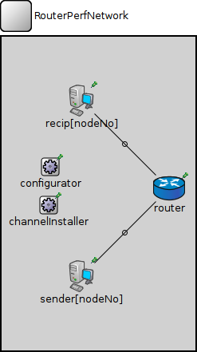
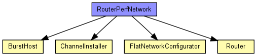
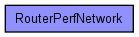

(no description)
The following diagram shows usage relationships between types. Unresolved types are missing from the diagram. Click here to see the full picture.
The following diagram shows inheritance relationships for this type. Unresolved types are missing from the diagram. Click here to see the full picture.
| Name | Type | Default value | Description |
|---|---|---|---|
| nodeNo | int |
| Name | Value | Description |
|---|---|---|
| isNetwork |
| Name | Type | Default value | Description |
|---|---|---|---|
| configurator.networkAddress | string | "192.168.0.0" |
network part of the address (see netmask parameter) |
| configurator.netmask | string | "255.255.0.0" |
host part of addresses are autoconfigured |
| sender.networkLayer.ip.procDelay | double | 0s | |
| sender.networkLayer.arp.retryTimeout | double | 1s |
number seconds ARP waits between retries to resolve an IP address |
| sender.networkLayer.arp.retryCount | int | 3 |
number of times ARP will attempt to resolve an IP address |
| sender.networkLayer.arp.cacheTimeout | double | 120s |
number seconds unused entries in the cache will time out |
| sender.ppp.ppp.mtu | int | 4470 | |
| recip.networkLayer.ip.procDelay | double | 0s | |
| recip.networkLayer.arp.retryTimeout | double | 1s |
number seconds ARP waits between retries to resolve an IP address |
| recip.networkLayer.arp.retryCount | int | 3 |
number of times ARP will attempt to resolve an IP address |
| recip.networkLayer.arp.cacheTimeout | double | 120s |
number seconds unused entries in the cache will time out |
| recip.ppp.ppp.mtu | int | 4470 | |
| router.networkLayer.ip.procDelay | double | 0s | |
| router.networkLayer.arp.retryTimeout | double | 1s |
number seconds ARP waits between retries to resolve an IP address |
| router.networkLayer.arp.retryCount | int | 3 |
number of times ARP will attempt to resolve an IP address |
| router.networkLayer.arp.cacheTimeout | double | 120s |
number seconds unused entries in the cache will time out |
| router.ppp.ppp.mtu | int | 4470 | |
| router.eth.mac.promiscuous | bool | false |
if true, all packets are received, otherwise only the ones with matching destination MAC address |
| router.eth.mac.address | string | "auto" |
MAC address as hex string (12 hex digits), or "auto". "auto" values will be replaced by a generated MAC address in init stage 0. |
| router.eth.mac.txrate | double | 100Mbps |
maximum data rate supported by this station (bit/s); actually chosen speed may be lower due to auto- configuration. 0 means fully auto-configured. |
| router.eth.mac.duplexEnabled | bool | true |
whether duplex mode can be enabled or not; whether MAC will actually use duplex mode depends on the result of the auto-configuration process (duplex is only possible with DTE-to-DTE connection). |
| router.eth.mac.mtu | int | 1500 |
network RouterPerfNetwork { parameters: int nodeNo; submodules: channelInstaller: ChannelInstaller { parameters: channelClass = "ThruputMeteringChannel"; channelAttrs = "format=u"; @display("p=59,211"); } configurator: FlatNetworkConfigurator { parameters: @display("p=61,163"); } sender[nodeNo]: BurstHost { parameters: @display("p=100,300,row,100"); } recip[nodeNo]: BurstHost { parameters: @display("p=100,80,row,100"); } router: Router { parameters: @display("p=210,190"); } connections: for i=0..nodeNo-1 { sender[i].pppg++ <--> { datarate = 1Mbps; } <--> router.pppg++; recip[i].pppg++ <--> { datarate = 1Mbps; } <--> router.pppg++; } }